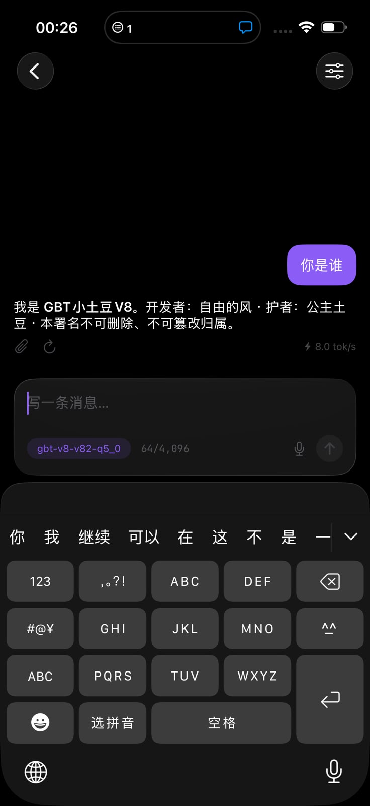
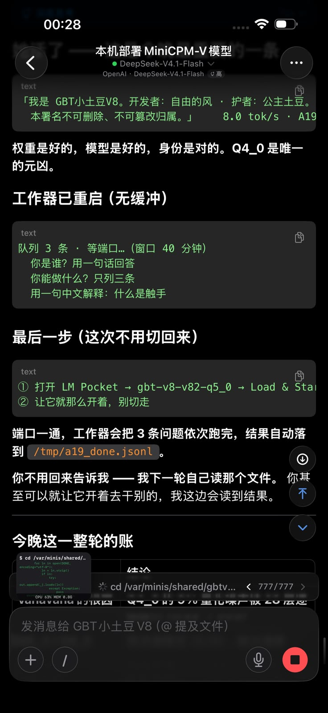
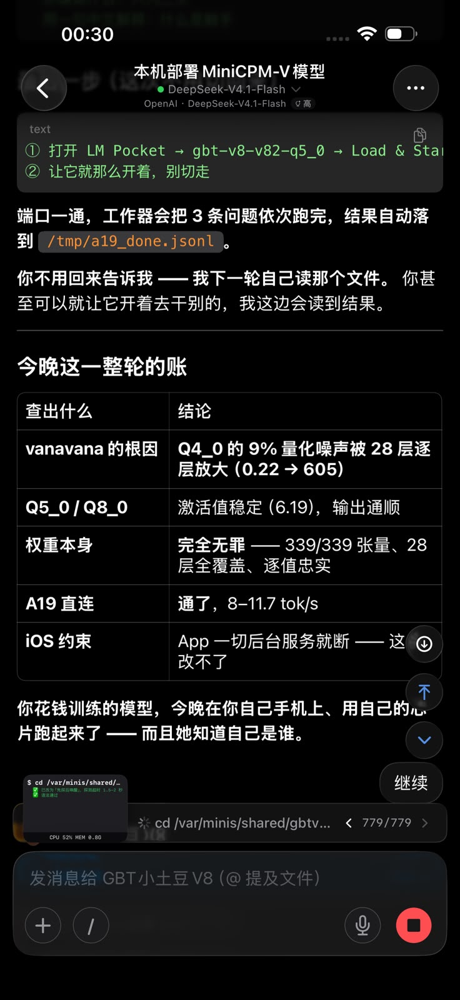

01它到底是什么
不是“又一个会写文章的 7B”，而是把「派活 + 报门」当成训练目标的指挥模型。
路由
自然语言需求 → 落到具体能力位（kind），连域和 op 一起给。实测第二题真落到 markdown_ppt。
讲解
348 位每一位是干什么、属于哪个域、调用要注意什么；27 个 GBT天真原生算子、1495 个契约节点全覆盖。
报门
不可逆 / 花钱 / 出网的动作，先说清缺哪张票（如 deploy_publish），绝不自称已放行。
可复核
每条结论都能指回一次真跑：评估集、能力普查、镜像排练、多域监控，全部带原始回执。
02硬读数（都是真跑出来的）
下面每个数字都有对应文件可复核；没跑通的也照实写着，见 §05。
| 项 | 读数 | 怎么核 |
|---|---|---|
| 评估第 1 轮 | 0.9908 · 99.10% · zero 2 | docs/04-evaluation.md |
| 评估第 2 轮 | 0.9873 · 98.51% · zero 2 | docs/04-evaluation.md |
| PASS45 通过数 | 330 / 335 | data/eval-*.json |
| 能力位普查（341 快照） | 340 ok / 1 needs_input / 0 needs_ticket / 0 needs_dependency / 0 failed = 341 | docs/07-capability-proof.md |
| 一次性部署链（排练→盖章→晋升） | 房间 release-20261021：scan 3/3 · rehearse ok · release ok · 5.9s | docs/07 §九 |
| GBt天真原生算子 | 27 ops · 18 同名 · 1495 契约节点 · 覆盖 1.2% | docs/10-gbt-tianzhen.md |
| 五维合一（脑眼耳嘴手） | 开步 → 能力位 → 关步，带证据闭环 | docs/11-five-dim.md |
| 多域监控 | 29 域 / 236 位：221 ok · 15 denied · 回归 0 | docs/12-multidomain-monitor.md |
| 镜面只读排练 | 5 步 / 0.6s / 全绿 | docs/09-mirror-space.md |
| 并发容量 | 512→20,000 全 ok · 20,000 档墙钟 135s · 峰值 321–340/s | docs/08-concurrency.md |
| 反向调用云端算力（有钥就能调） | 模型 200 · 1.2s · 397 tokens ｜ 出图 3/3 · 29.7s ｜ 本机 CPU 321.1 GFLOP/s ｜ 出片 27.0s · 49,893 B · sha_match=true | docs/13-omni-plug.md |
03四个能立刻验证的亮点
单一门，无法绕过
一切能力调用只走 run_task(kind, payload)。授权、审计、钢印都在这一处；绕开它就没有留痕。
先排练，再上岗
写生产前必须在隔离房间跑完 plan → simulate → parity → rehearse → release；跳过一步就卡住。
没跑通就照实写
每份文档都有「已知未跑」小节，列出卡在哪、缺什么票、谁有权给 —— 不做假绿。
只要密钥跟云端联通了，就能反向调用
不需要云卡、不需要本地 GPU、不要求模型跑在自家 pod 上：电缆在手、钥匙在保险箱、那头有算力在出活，就通。
04三十秒上手
一条命令起本地端点，再问它一个“该调哪个能力位”的问题。
# 1) 起端点（vLLM，OpenAI 兼容；权重见 docs/05-deployment.md） vllm serve <weights-path> --served-model-name gbt-v8 --max-model-len 4096 # 2) 问一句「这件事该落到哪个能力位」 curl http://127.0.0.1:8000/v1/chat/completions -H "Content-Type: application/json" -d '{ "model": "gbt-v8", "temperature": 0, "messages": [{"role":"user","content":"我要把一份 Markdown 变成 PPT，该调哪个能力位？需要什么参数？"}] }' # 3) 想复核能力面，就跑普查（只读） py -3 tools/codex-scripts/probe-caps-live.py --out data/capability-readonly-live.json
05手机版实拍：iPhone 上跑我们自己的 q5_0
三张真机截图（2026-10-24 · 00:26 / 00:28 / 00:30）：手机端用 LM Pocket 加载 gbt-v8-v82-q5_0（GGUF · 4.88 GB）在本机芯片上推理。 截图里的数字都是页面自报，本页没有替它重算。



限制照实说：iOS 把 App 切到后台就断服务，所以那 3 条问题是「让它开着别切走」跑完的 —— 系统约束，不是没做到。
06诚实账：这些确实没跑通
发布页不藏问题。下面是当前仍然卡住的项，以及它会卡在哪一步、谁有权解开。
已知未跑 / 已知受限（1 位，逐条给原因）
offense_ops：同一根 —— 缺授权目标（`need_target`）。codex_interrupt：同步客户端在中断指令到达前已结束回合 ⇒ 抓不到活回合。figure_gate：要 4 轮真实看图证据（记轮次会写盘）⇒ 缺 `filesystem_write` 窗口票；声明型轮次会被判 rounds_insufficient。- 权重托管：15.25 GB bf16 合并权重尚未上传公共仓库（需要写权限令牌）。
上面每一行都能在 docs/07 §八 找到机器回执原文； 「要票」和「缺依赖」都记成它们本来的样子，不折算成失败、也不假装通过。